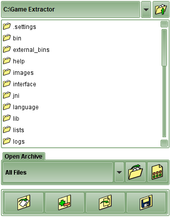
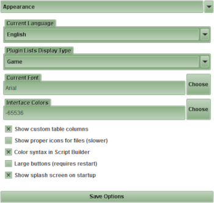
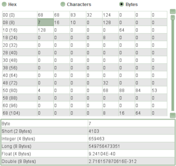
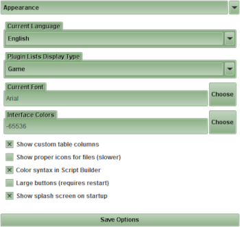
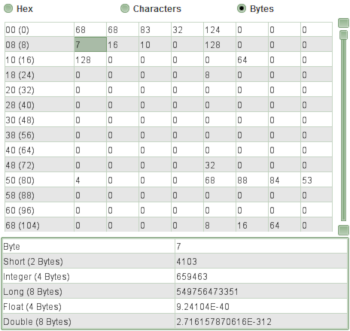

Side Panel
Back to Index
A Side Panel is any panel that appears on the "side" (right) of the program. There are a number of different Side Panels, the most common being the one that displays the Directory List.

An example of a Directory List Side Panel

An example of a Options Side Panel

An example of a Hex Viewer Side Panel

